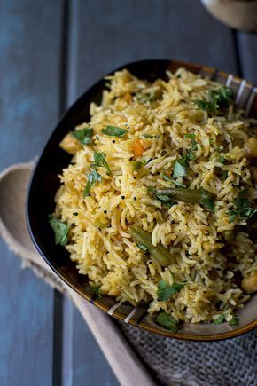

Achari Vegetable Pulao is interesting in that it has ‘achar’ or spicy Indian pickle added right into the dish. Usually pickles are served with a dish and not in a dish, so that makes this dish spicy and very flavorful.

Ingredients (Serves: 4)
1½ cups Basmati Rice, soaked for at least 15 minutes
½ cup Chickpeas, boiled
1 Large Onion, thinly sliced
1 cup Mixed vegetables (chopped carrots, green beans, cauliflower etc)
2 tbsp Achar/ Pickle
2 tbsp ghee
1 tsp Fennel seeds
1 tsp Mustard seeds
1 tsp Fenugreek seeds
1 tsp Nigella seeds
2 Cardamom pods
½ tsp Asafoetida (hing)
1 tsp Ginger-garlic paste
½ tsp turmeric
½ tsp chili powder
½ tsp garam masala
To taste salt
2 tbsp Cilantro, finely chopped
Method
In a pressure cooker, heat ghee and add fennel seeds, mustard seeds, fenugreek seeds, nigella seeds, cardamom, cumin seeds and asafoetida. Cook till the seeds start to splutter.
Add the onions and ginger-garlic paste; cook till they turn lightly browned around the edges, about 3~4 minutes.
Add the mixed vegetables, chickpeas, turmeric, chili powder, garam masala, salt and the achar/ pickle. Cook for 2~3 minutes.
Add the rice and mix well. Cook on medium flame for 1~2 minutes.
Add 3cups of hot water, mix well and pressure cook for 2 whistles.